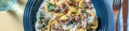

Creamy Punpkin Ravioli and Bacon with Mushrooms and Sage

Ingredients
Method
-
Boil the kettle • Heat olive oil in a frying pan over high heat • Cook diced bacon, breaking up with a spoon,
until browned, 3 mins • Add mushrooms and garlic paste and cook until softened, 5 mins • Add spinach and tear in
sage leaves. Stir until just wilted.
-
Pour boiling water into a saucepan over high heat • Bring to boil, add ravioli and cook until ‘al dente’, 3 mins •
Using a slotted spoon, transfer ravioli to the frying pan and toss to combine.
-
Add cream and 1/2 the Parmesan to the pan and stir to combine • Season to taste • Serve ravioli topped with
remaining Parmesan.